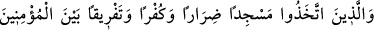
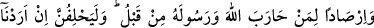
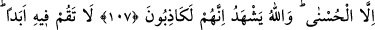
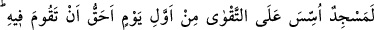
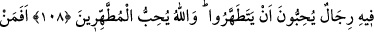
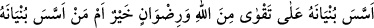
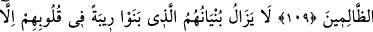
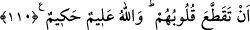

DIRAR MESCİDİ -
KUBA MESCİDİ
107. Bir de (müminlere) zarar vermek, (hakkı) inkar etmek, müminlerin arasına
ayrılık sokmak ve daha önce Allah ve Rasûlü’ne karşı savaşmış olanı beklemek için
bir mescid yapanlar var. Onlar: “İyilikten başka bir niyetimiz yoktu.” diye mutlaka
yemin edecekler. Oysa Allah onların kesinlikle yalan söylediklerine şahittir.
108. Onun içinde asla namaz kılma! İlk günden takvâ üzere kurulan mescid
(Kubâ mescidi), içinde namaz kılmana elbette daha lâyıktır. Onda temizlenmeyi
seven adamlar vardır. Allah da çok temizlenenleri sever.
109. Binasını Allah korkusu ve rızası üzerine kuran kimse mi daha hayırlıdır,
yoksa yapısını yıkılacak bir yarın kenarına kurup onunla beraber kendisi de çöküp
cehennem ateşine giden kimse mi? Allah zalimler topluluğunu doğru yola iletmez.
110. Yaptıkları bina, kalpleri parçalanıncaya dek yüreklerinde bir şüphe olarak
kalacaktır. Allah çok iyi bilendir, hüküm ve hikmet sâhibidir.
“Bir de” Tebük gazvesine katılmayanlar arasında “…bir mescid” Kubâ mescidini
“yapanlar” münâfıklar “var.”
et-Tibyân’da anlatıldığı üzere “Kubâ”, Medine yakınında, Medine’ye yarım fersah
mesafede bir köyün ismidir.
Bilesin ki Rasûlullah (s.a.) Mekke’den hicret edip Kubâ’ya gelince Evs kabilesinin
bir kolu olan Benî Amr b. Avf kabilesi arasında, Külsûm b. Hidm’in evinde misafir
oldu.